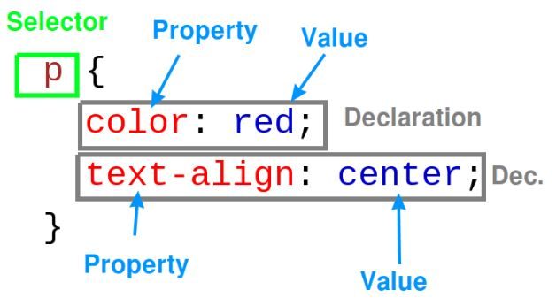

CSS (Cascading Style Sheets): 디자인 언어
CSS는 HTML로 표현하기 어려운 디자인 효과를 나타내는 언어이다
CSS 문법은 style속성이나 태그로 표기하며, 정보와 분리하여 인식된다
중복할 필요 없이 일괄적으로 디자인을 변경할 수 있다
; 은 하나의 효과의 끝에 넣어 구분한다
CSS 적용방법
Inline Style
style속성(style="")은 HTML속성(Attribute)태그이고 해당태그 한줄마다 CSS언어를 들여온다 (선택자가 필요없다)
Internal Style
style태그는 HTML태그이고 안에는 CSS언어를 들여온다.
선택자+선언(효과+값) 으로 이루어진다.
선택자을 많이 알수록 정확도를 높일 수 있고, 선언(속성)을 많이 알수록 표현력을 높일 수 있다

External Style
link태그를 통하여 외부 CSS 파일을 링크해서 사용 (CSS 파일을 생성해서 불러옴)
선택자의 우선순위
CSS 선택자로 지정할 수 있는 HTML태그 종류는 3가지가 있다
구체적인 선택자가 포괄적인 선택자 보다 우선순위가 높고(id태그 > class태그 > HTML기본태그), 같은 레벨에서는 마지막에 등장하는 태그의 우선순위가 높다
class는 그루핑하는 것이고 id는 한개만 식별하는 것이다. (고로 id는 하나만 지정하는 것이 원칙이다)
br태그는 닫는태그가 없어 id와 class지정이 안되는것 같다
(출처 : https://www.w3schools.com/cssref/css_selectors.asp)
Box model 과 Display

참고링크 : CSS_BOX.html
박스는 태그가 차지하는 공간을 의미하고, 두가지 레벨이 있다
Block level element = 화면전체 차지 / Inline element = 자기 컨텐츠의 부피만큼만 차지
CSS의 display 태그로 기본 설정 값을 변경시킬 수 있다 (Block level element / Inline element / none)
div 와 span
div 와 span은 의미를 가지지 않은 무색무취의 태그이다
div : Block level element
span : Inline element
GRID
참고링크 : CSS_GRID.html
div 두개를 묶어서 Display값을 grid로 지정하면 분할화면을 만들 수 있다 (display: grid;)
(새기술이 적용된 범위를 알수있는 웹사이트 : https://caniuse.com)
미디어쿼리
미디어쿼리는 화면의 특성에 따라 웹스타일을 수정하는 CSS 태그이다 (@media)